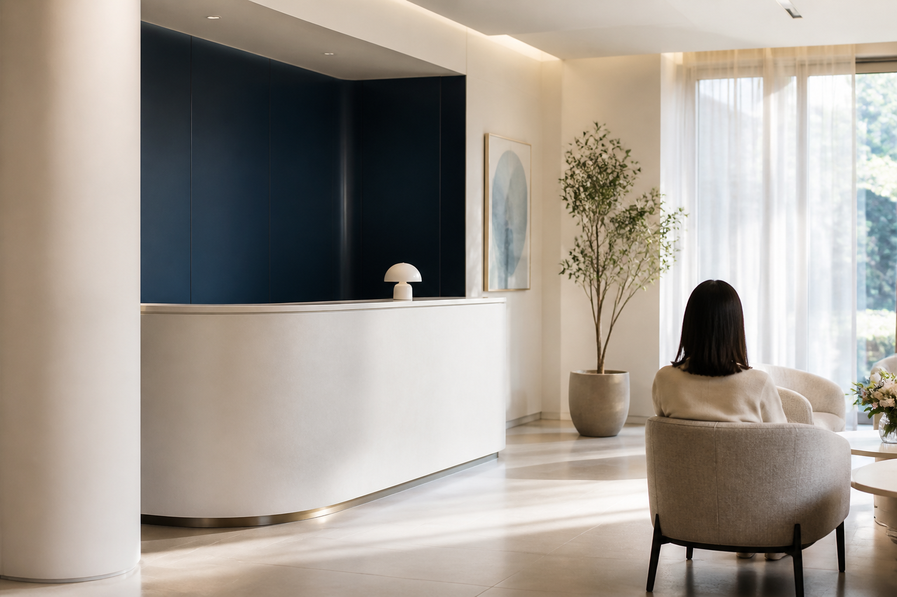
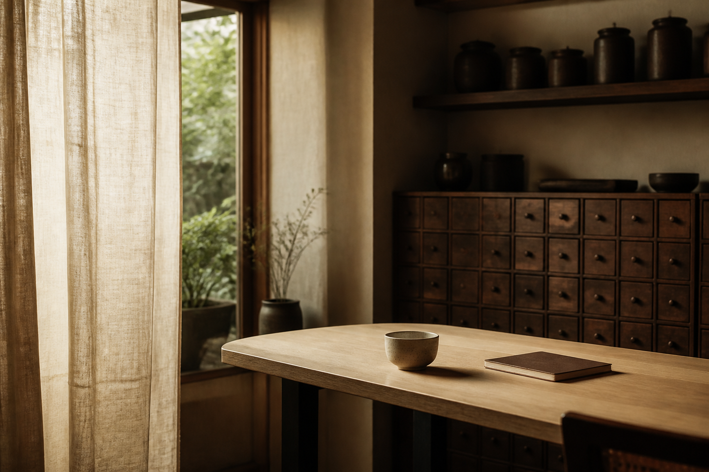

02
CONTENT
블로그 콘텐츠
검색 결과에서 클릭을 얻는 문장보다, 읽고 난 뒤 병원을 기억하게 하는 콘텐츠를 만듭니다. 진료 철학, 자주 묻는 질문, 계절별 건강 이야기처럼 병원의 말투가 남는 주제를 제안합니다.
- 월간 콘텐츠 주제 기획
- 진료 기준을 담은 원고 구성
- 사진·카드뉴스 활용 방향 제안
- 홈페이지와 연결되는 콘텐츠 동선
SERVICE / 01—03
홈페이지 하나만 예쁘게 만드는 일에서 끝내지 않습니다. 환자가 병원을 만나고 이해하고 방문하는 모든 접점의 톤과 정보를 연결합니다.
우리 병원 상담하기 ↗HOMEPAGE

병원의 태도와 진료 정보를 처음 만나는 사람에게 자연스럽게 전합니다. 메인 화면의 인상, 진료 안내, 의료진, 방문 정보까지 병원에 맞는 정보의 순서로 설계합니다.
CONTENT
검색 결과에서 클릭을 얻는 문장보다, 읽고 난 뒤 병원을 기억하게 하는 콘텐츠를 만듭니다. 진료 철학, 자주 묻는 질문, 계절별 건강 이야기처럼 병원의 말투가 남는 주제를 제안합니다.
NAVER PLACE

방문 직전에는 긴 설명보다 정확한 정보가 필요합니다. 진료시간, 위치, 주차, 첫 방문 안내, 예약 링크처럼 선택을 돕는 내용을 정돈해 플레이스의 완성도를 높입니다.
HOW WE START
병원이 중요하게 여기는 진료 기준과 지금의 고민을 듣습니다.
고객이 확인해야 할 내용을 우선순위와 페이지 구조로 정리합니다.
사진과 문장, 디자인을 한 화면의 인상으로 완성합니다.
오픈 이후 콘텐츠와 플레이스가 같은 방향을 유지하도록 돕습니다.